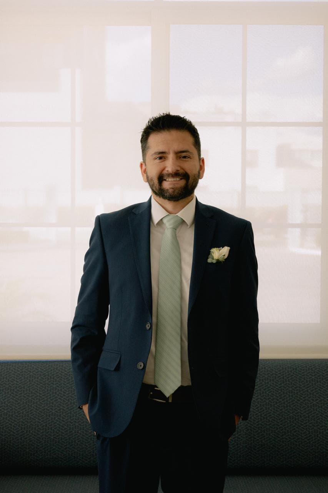

Fernando Munoz | WDD 130

Hello, my name is Fernando Munoz and I am from Mexico City, Mexico. I enjoy spending time with my family, going outside, reading and taking photos with my camera. My camera is a EOS-R50, is a very simple inexpensive and yet quite a good model to use wide range of objectives, which lets me experiment with different lenses depending on the situation and the mood I am in. I like hiking in the goods, and whenever the terrain allows it aI will take my bicycle, since it makes the whole experience even more enjoyable and refreshing, especially when the weather is nice and the trail is not too crowded. I also like taking long walks to the city's Downtown area, where there are so many sites, and restaurants to eat at, there are also a lot of shops where to buy little fun things, and I always find something new to discover no matter how many times I go. When it comes to books I like to get physical copies but I also have a kindle. I like all sorts of books, fiction, fantasy, horror, satire, biography, science, philosophy, I used to have a lot of time before, now with all my responsibilities, is hard to make the time to do it, even though I still try my best to read whenever I can, since it always helps me relax and unwind after a long day.